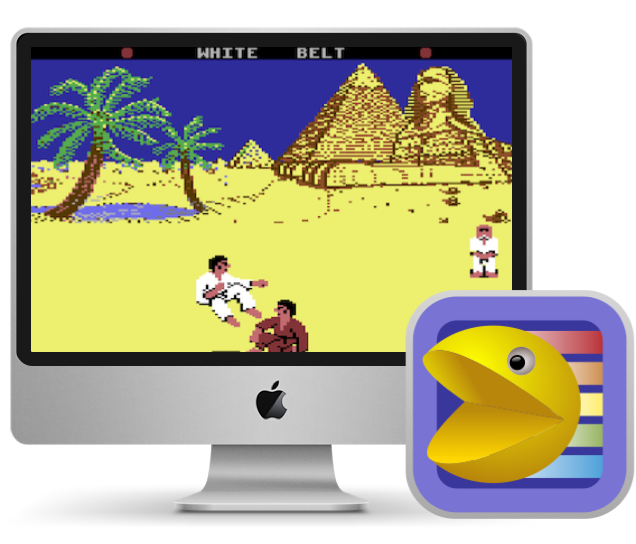
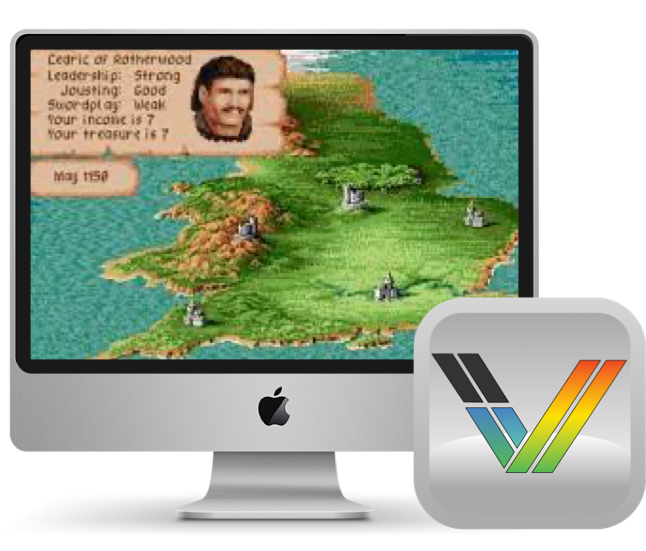
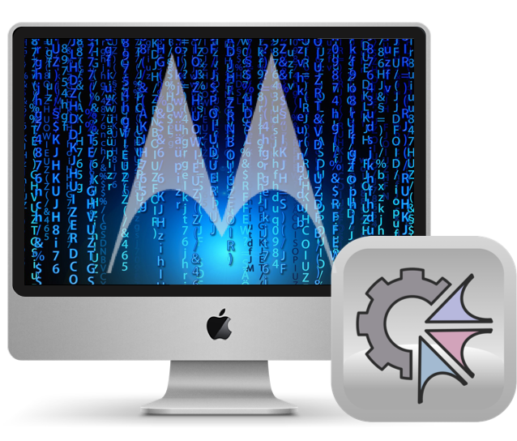
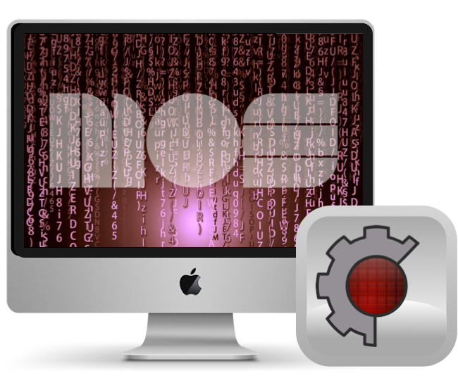
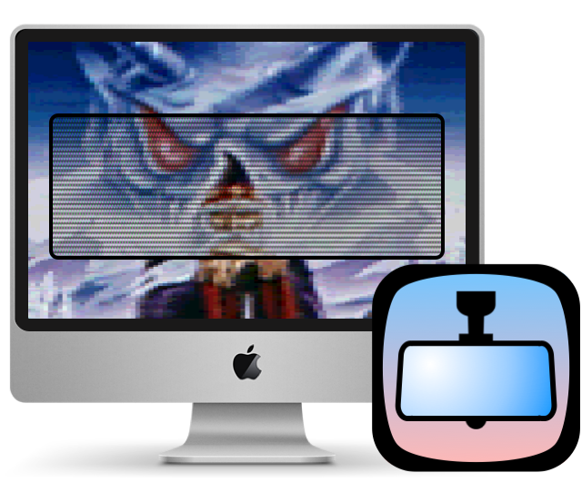
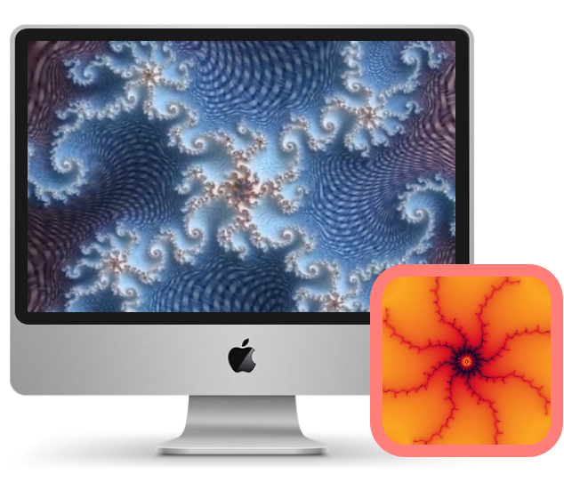

Overview
This page provides an overview of my applications, most of which are related to retro computing. Each project has its own subpage with more detailed information. Bug reports and feedback are always welcome; please feel free to open an issue in the corresponding project repository. All projects are released under open-source licenses.

VirtualC64
VirtualC64 is a Commodore 64 emulator written for macOS with a strong emphasis on timing accuracy and a intuitive UI.

vAmiga
vAmiga is a native macOS application, emulating the classic Amiga models A500, A1000, and A2000. Like VirtualC64, it focuses on timing-accuracy and user-experience.

Moira
Moira is a speed-optimized, cycle-accurate Motorola 68000 CPU core written in C++, powering the emulation behind vAmiga, It is maintained as a stand-alone project for easy integration into third-party apps.

Peddle
Peddle is a speed-optimized, cycle-accurate MOS 6502/6510 CPU core written on C++, powering the emulation behind VirtualC64. Like Moira, it is maintained as a stand-alone project for easy integration into third-party apps.

RetroVisor
RetroVisor is a utility for macOS that applies a real-time CRT filter to any region of the desktop. Inspired by ShaderGlass, it creates a semi-transparent overlay that allows the user to view content through a customizable "retro lens," featuring scanlines, shadow masks, and phosphor glow.

DeepDrill
DeepDrill is a Mandelbrot set explorer based on perturbation and series approximation. These modern techniques bypass the precision limits of standard floating-point math, allowing users to zoom deeply into the fractal without the performance penalty of traditional algorithms.